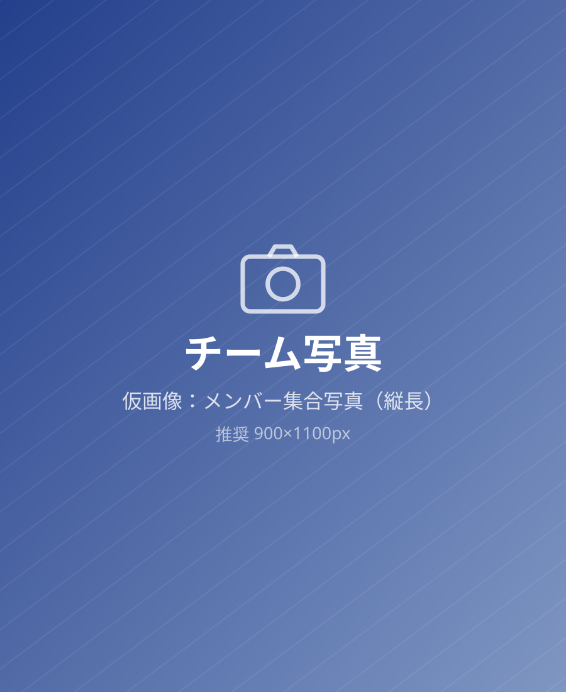
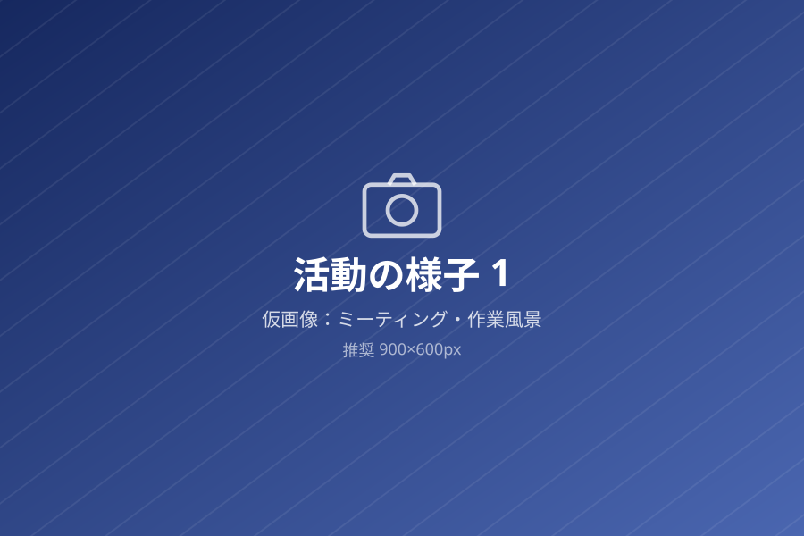
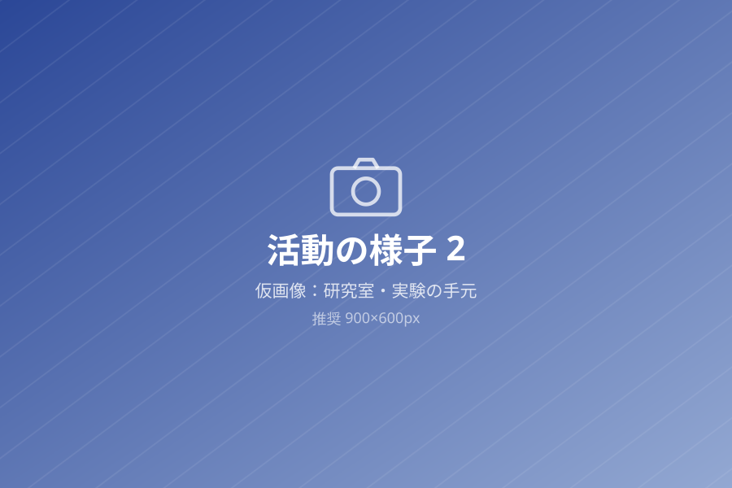

ACHIEVEMENT UNLOCKED
2023
BRONZE
Micro Invader Game
生体分子でつくるミクロなインベーダーゲーム
免疫のしくみをインベーダーゲームに見立てた分子システム。DNAで修飾したビーズの「弾」を撃ち出し、リポソームの「敵」が当たると蛍光や自壊で応答します。
INTERNATIONAL BIOMOLECULAR DESIGN COMPETITION
東京科学大学の学生チームとして、生体分子で分子ロボットを設計する国際大会「BIOMOD」に挑戦しています。
私たちについて
私たちは、国際生体分子デザインコンペティション「BIOMOD」に挑戦している、東京科学大学の学生チームです。
DNAやRNA、タンパク質といった生体分子を設計し、ナノサイズのロボットや分子システムを創り出す研究に取り組んでいます。テーマ決めから実験、Webサイト・動画の制作、英語での発表まで、すべて学生が主体です。
BIOMODについて


これまでのプロジェクトと受賞歴
4つの班が連携して、一つのプロジェクトを形にする
お知らせ
読み込み中...
日々の活動や研究の進捗を発信中
ご質問、共同研究や協賛のご相談など、お気軽にお問い合わせください。